Kingston Greenway Tree Condition and Edge Restoration Report
Robert Keenan
700 Knights Bridge Rd, Edmond, OK 73034
405-888-7879
Field observations: September 30–October 5, 2026 Prepared by Christian Castillo · Original report: October 5, 2026 Amended November 2, 2026 · Consolidated HOA work scope and pricing
Revised HOA pricing integration: November 2, 2026 · Original field findings unchanged
Requested HOA Review and Action
Arrange immediate removal of Tree 1 (T-202609301216):
advanced basal decay, substantial lean toward the residence,
and crown dieback.
Arrange prompt removal of suspended dead branches
from Tree 6 (T-202610011746).
Keep people out from beneath the affected crown until addressed.
Coordinate mitigation for Tree 9 (T-202610051527)
and selective pruning of Tree 2 (T-202609301222).
Review the recommended treatment and approve the selected scope of work.
Prepared for presentation by Robert Keenan to the Kingston Greenway HOA. The observations and proposed work cover the full assessed area, including trees along the residential edge, boundary and greenway.
Consolidated HOA Scope and Itemized Pricing
Submitted for HOA consideration by Robert Keenan. This consolidated schedule covers all assessed locations and includes the higher-priced treatment wherever alternatives are mutually exclusive. It is intended to support a single review of priorities, scope, and budget.
Commercial HOA allowances from the revised October 23, 2026 schedule. All amounts below are per proposed work item, not an authorization to proceed. Optional and conditional alternatives are identified explicitly.
Item
Proposed treatment
HOA estimate
1
Bur oak — complete hazard removal Immediate priority
$3,900
2
Bur oak — union inspection and targeted crown reduction
$870
3a
Rear-deck bur oak — baseline examination and monitoring record
$210
3b
Rear-deck bur oak — deadwood over roof/deck
$390
4a
South boundary bur oak — basal union assessment
$210
4b
South boundary bur oak — conservative reduction Conditional
$990
6
Spreading greenbelt bur oak — remove suspended deadwood Prompt priority
$570
7
Greenbelt overhang — vine and loose-material management
$270
8
Young American elm — boundary clearance prune
$210
9a
Greenbelt hackberry — codominant union evaluation Prompt priority
$240
9b
Hackberry — conditional reduction Alternative A
$1,050
9c
Hackberry — sectional removal Alternative B
$2,520
10
Boundary management — selective sapling clearing
$330
TOTAL — comprehensive higher-option scenario
$10,710
Base planning scope (excluding conditional treatments): $7,200
With Tree 4 optional reduction: $8,190
With Tree 9 reduction alternative: $8,250
With Tree 9 removal alternative: $9,720
With Tree 4 reduction + Tree 9 removal: $10,710
The $10,710 comprehensive HOA planning total includes the conditional Tree 4 reduction ($990) and the higher-cost Tree 9 removal ($2,520), instead of Tree 9 crown reduction ($1,050). The two Tree 9 alternatives are never charged together. All site areas are included for budget review; treatment selection and work authorization remain subject to verification.
Scope: reasonable branch and wood debris removal included in tree-work prices. Exclusions unless separately agreed: stump grinding, permits, traffic control, crane rental, utility clearance, extraordinary ground protection, and concealed-defect remediation. Pruning is intended to follow applicable ANSI A300 practices; operations are to be planned under applicable ANSI Z133 safety requirements. Material changes require a written revision.
Individual Tree Findings
Priorities indicate recommended action, not formal risk ratings.
Photo placeholders identify the supporting views to include.
1. Bur Oak — North Greenbelt
T-202609301216
Immediate removal
Mature, single stem · Approximately 10 m north of home
1.1 Finding: Advanced basal decay, pronounced southward
lean toward the home, and significant crown dieback.
The home lies within the potential fall zone.
1.2 Recommendation: Remove without delay.
Avoid the potential fall zone pending removal.
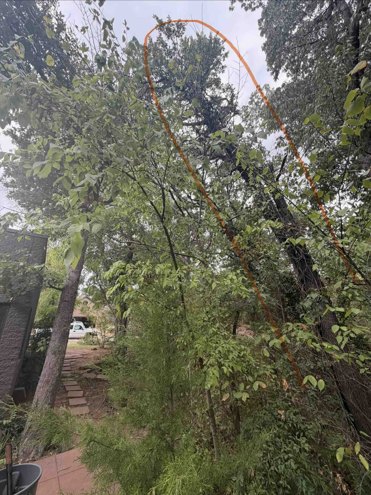
Figure 1A · Tree lean and relationship to residence.
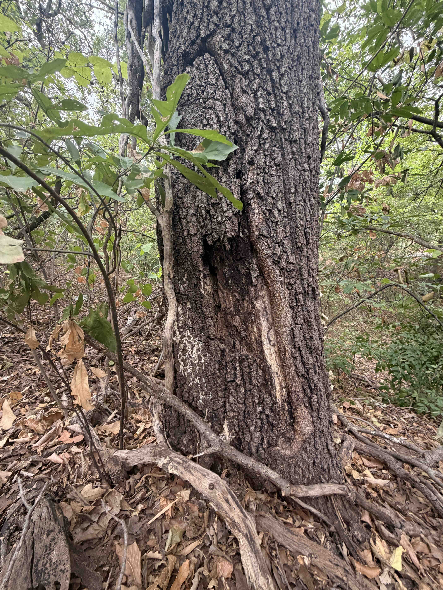
Figure 1B · Basal decay.
Proposed work & HOA pricing
1. Bur oak — complete hazard removal Immediate priority$3,900
Controlled sectional dismantling of leaning, decayed north-greenbelt bur oak; specialized rigging, ground protection and debris removal. Stump grinding excluded. Final price sensitive to height, diameter, targets and access.
2. Bur Oak — North Greenbelt
T-202609301222
Selective reduction
Mature, three codominant stems · Approximately 15 m north of home
2.1 Finding: Generally healthy crown, limited included
bark at the main stem unions, and no visible decay noted.
Substantial branches extend toward the house.
2.2 Recommendation: Retain. Inspect the main unions
and selectively reduce house-facing branches to reduce leverage
and improve clearance.
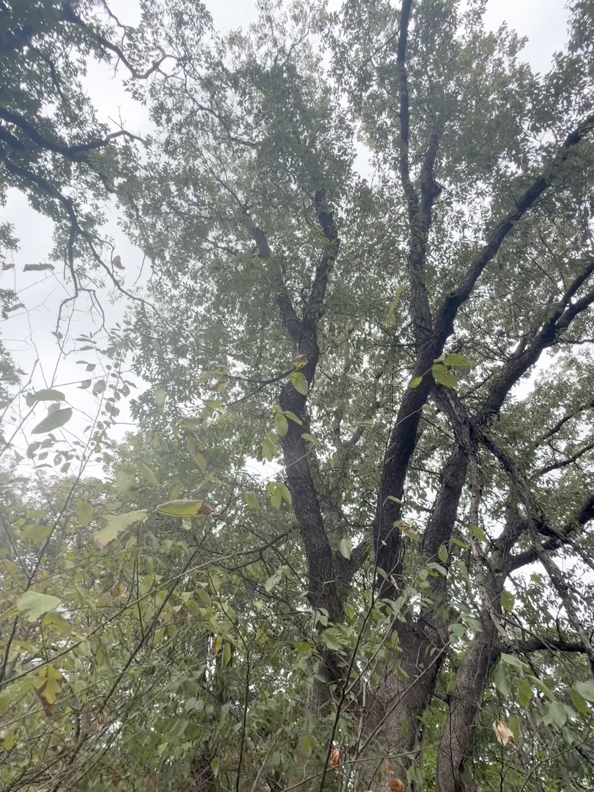
Figure 2A · House-facing branches.
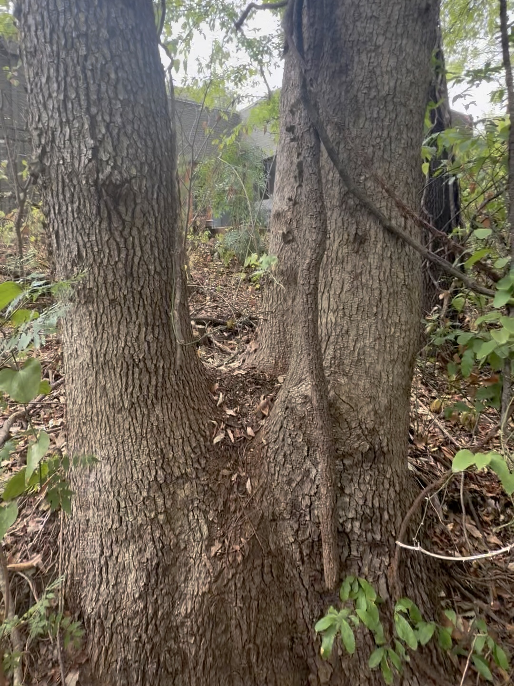
Figure 2B · Codominant stem unions.
Proposed work & HOA pricing
2. Bur oak — union inspection and targeted crown reduction$870
Climbing-level visual evaluation of three codominant unions, selective reduction of house-facing branches and compliant finish cuts; retain natural form.
3. Bur Oak — Rear Deck
T-202609301226
Examine and monitor
Mature, single stem · Approximately 2 m north of home · Residential-side location
3.1 Finding: Lower-trunk groove or constriction scarring
at deck height; cause and internal condition are unknown.
Crown generally healthy, with peripheral dead branches.
3.2 Recommendation: Examine and document the basal feature,
establish a monitoring plan, and address dead branches over the
roof or occupied deck. Further investigation may be needed.
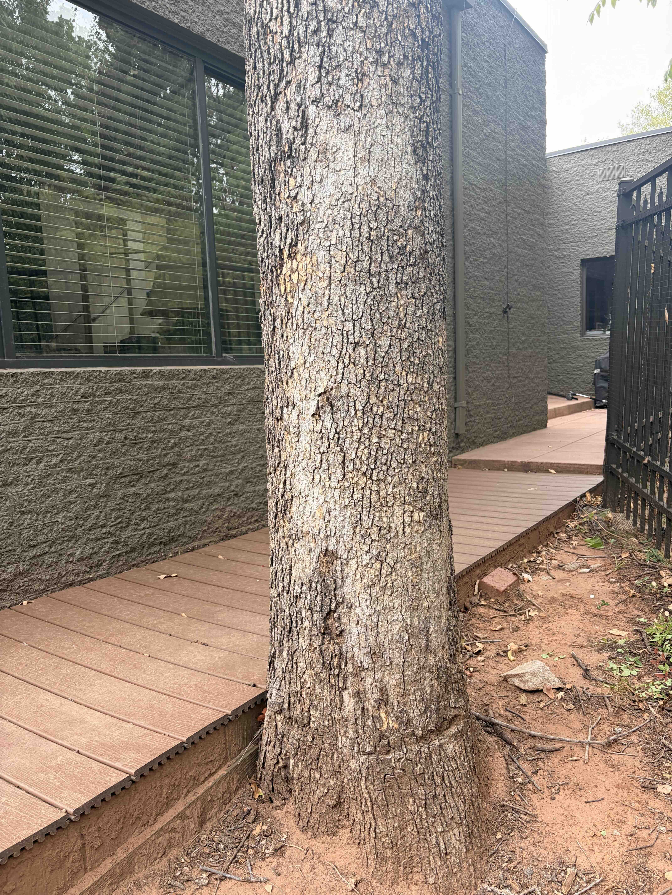
Figure 3A · Basal groove and deck interface.
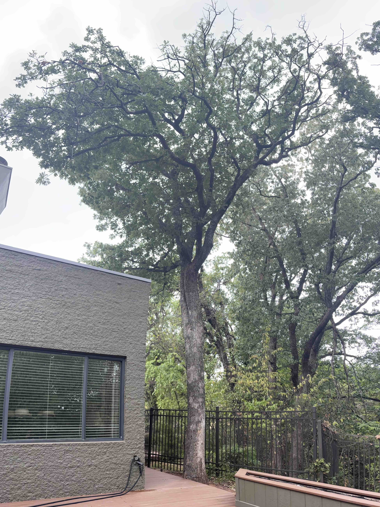
Figure 3B · Crown condition and nearby targets.
Proposed work & HOA pricing
3a. Rear-deck bur oak — baseline examination and monitoring record$210
Document trunk groove and deck interface; ground-access visual inspection, photographs and written monitoring recommendations. Advanced testing/engineering excluded.
3b. Rear-deck bur oak — deadwood over roof/deck$390
Remove accessible dead limbs presenting exposure to occupied deck or roof; controlled lowering where required; no live-crown reduction assumed.
4. Bur Oak — South Property Boundary
T-202609301317
Union assessment / reduction
Mature, two codominant stems · Approximately 2 m south of home
South boundary setting; property line position not determined in this report
4.1 Finding: Substantial included bark at the basal
stem union raises concern for stem separation.
Crown vigorous; no significant visible decay noted.
4.2 Recommendation: Coordinate access and work limits before intervention.
Examine the union and plan conservative crown reduction to reduce
leverage on the affected stems.
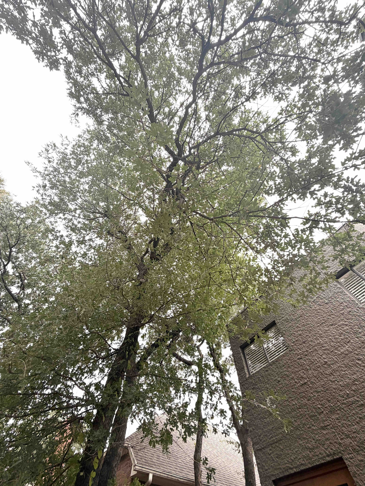
Figure 4A · Tree position and both stems.
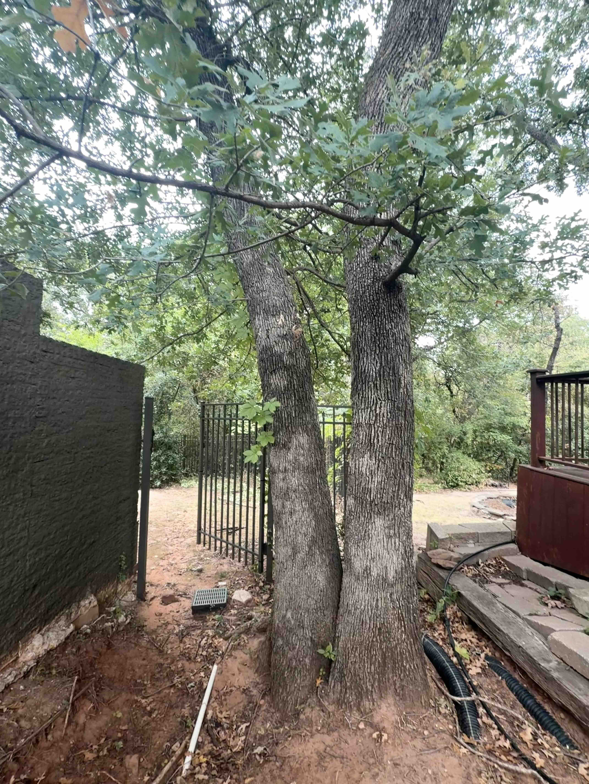
Figure 4B · Basal stem union.
Proposed work & HOA pricing
4a. South boundary bur oak — basal union assessment$210
Document the included-bark union, inspect accessible defect indicators and formulate treatment recommendations. Confirm access and permitted work limits before proceeding.
4b. South boundary bur oak — conservative reduction Conditional$990
Selective crown reduction to moderate leverage on codominant stems, only if the union assessment supports retention. Additional support systems not included.
4b is conditional on assessment findings and work authorization.
5. Common Hackberry — East Fence
T-202610011738
Clearance completed
Young, dead · Base in greenbelt
5.1 Finding: Dead sapling rested on the fence and was
intertwined with a redbud.
5.2 Action completed: Encroaching portions removed by
Abundant Life Land & Tree LLC. No further action recommended
at this time; continue boundary monitoring.
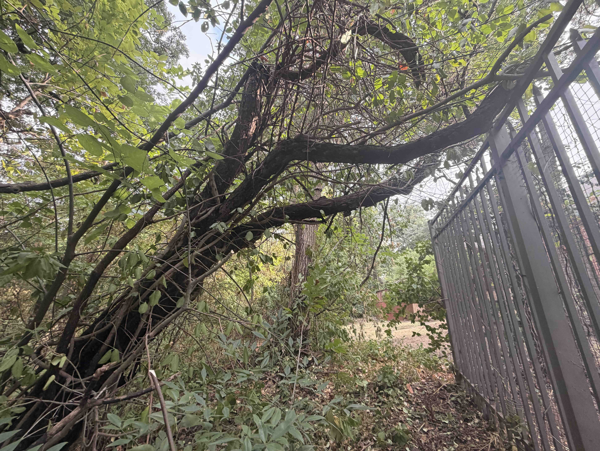
Figure 5A · Before fence clearance.
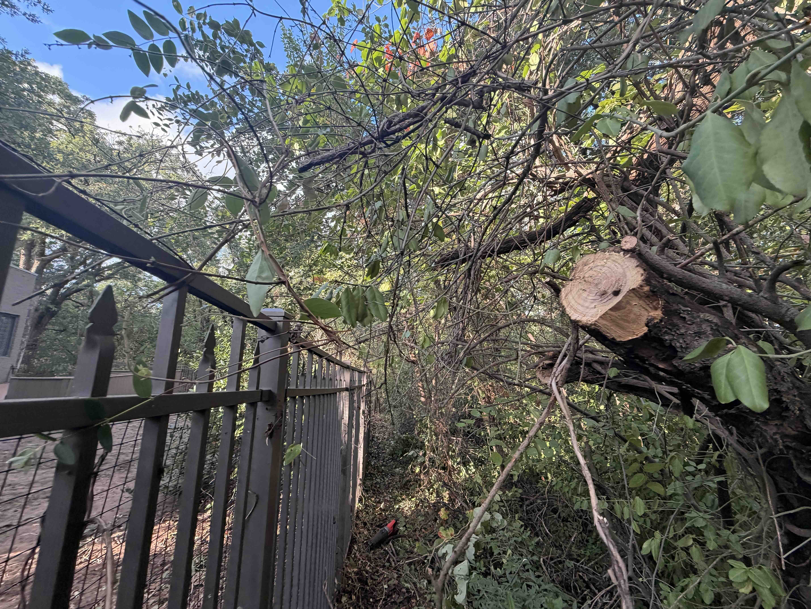
Figure 5B · Completed fence clearance.
Proposed work & HOA pricing
Prior corrective action completed; no additional work or price proposed.
6. Bur Oak — Spreading Greenbelt Tree
T-202610011746
Prompt deadwood removal
Mature, spreading crown · Base in greenbelt
6.1 Finding: Dead branches lodged in the crown present
an overhead falling-branch hazard with potential for serious injury.
6.2 Recommendation: Promptly remove suspended dead branches.
Restrict access beneath the affected crown until work is complete.
Whole-tree removal is not recommended by this finding.
Access crown and safely remove/lower lodged dead branches; establish exclusion zone before work. Whole-tree removal excluded.
7. Bur Oak — Greenbelt Overhang
T-202610011749
Routine vine management
Mature, single stem · Base in greenbelt
7.1 Finding: Branches overhang the property and fence;
dead vine foliage remains in the crown.
No specific structural defect recorded.
7.2 Recommendation: Manage vine growth and remove
accessible loose material without damaging the tree.
Review fence clearance; avoid pulling attached vines from the crown.
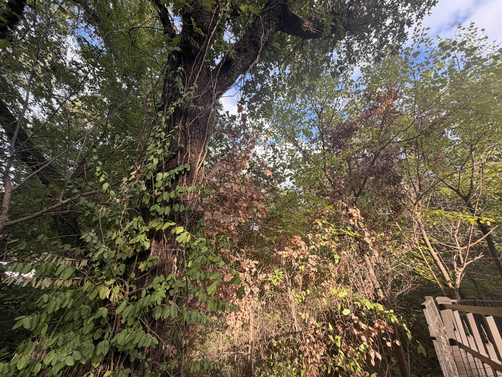
Figure 7A · Vine foliage and fence overhang.
Proposed work & HOA pricing
7. Greenbelt overhang — vine and loose-material management$270
Cut manageable vines near their bases and remove safely reachable loose vegetation; do not pull attached vines from elevated limbs.
8. American Elm — Property Edge
T-202610011750
Clearance pruning
Young, healthy · Residential edge
8.1 Finding: Branches extend into the adjacent residential-use area.
8.2 Recommendation: Retain and selectively prune
for clearance while preserving suitable crown structure.
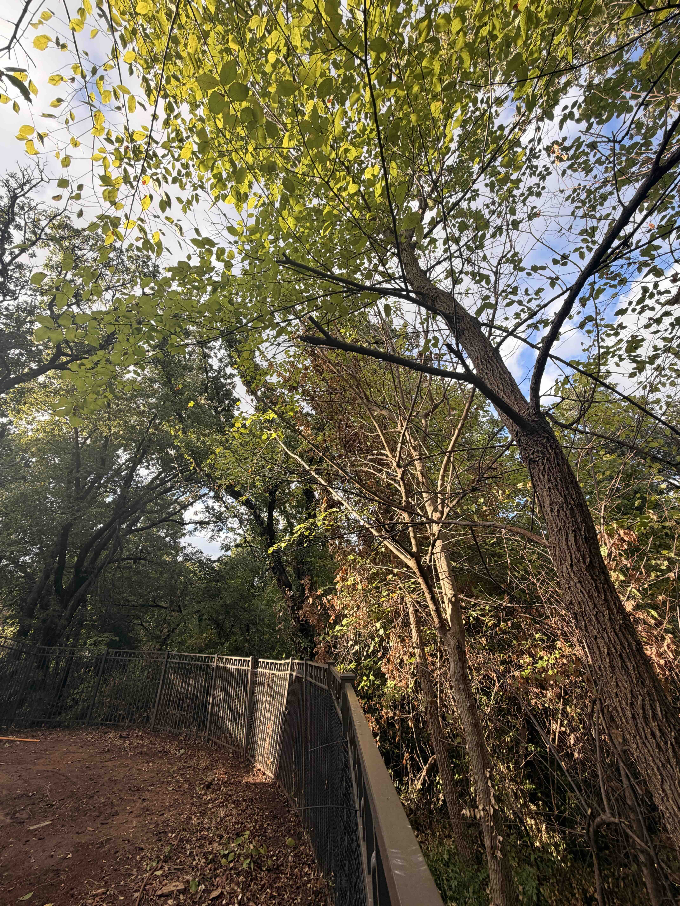
Figure 8A · Boundary encroachment.
Proposed work & HOA pricing
8. Young American elm — boundary clearance prune$210
Selective branch pruning to improve residential clearance while preserving healthy branch structure.
9. Common Hackberry — Greenbelt Near Home
T-202610051527
Prompt mitigation decision
Mature, two codominant stems · Base in greenbelt
9.1 Finding: Included bark at the basal stem union
raises concern for stem separation. Branches extend toward the home.
9.2 Recommendation: Promptly assess the union and
select either retention with targeted reduction to reduce leverage
or complete removal, according to the defect’s severity.
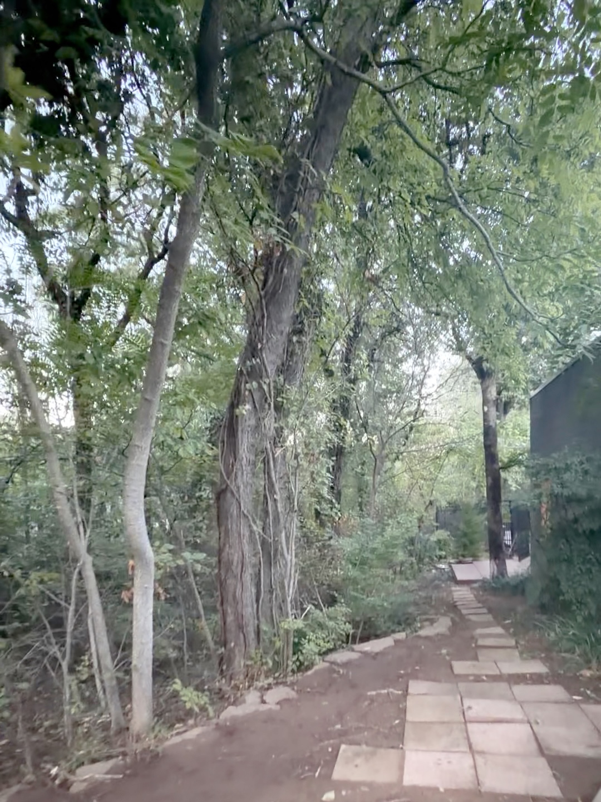
Figure 9A · Tree position and house-facing branches.
Proposed work & HOA pricing
9a. Greenbelt hackberry — codominant union evaluation Prompt priority$240
Examine included-bark junction, document visible structural concerns and recommend retention/reduction versus removal. Advanced testing excluded.
9b. Hackberry — conditional reduction Alternative A$1,050
Selective reduction of house-facing lever arms if retention is defensible after 9a. Not performed in conjunction with 9c.
9c. Hackberry — sectional removal Alternative B$2,520
Controlled dismantling, rigging and debris removal if defect assessment establishes removal as preferred treatment. Stump grinding excluded. Not performed with 9b.
9b and 9c are mutually exclusive alternatives; neither is authorized without the findings from 9a and a treatment decision.
10. Ongoing Boundary Management
10.1 Selectively manage encroaching volunteer saplings to maintain
clearance and a recognizable property edge. Retain desirable
vegetation and confirm access and work authorization.
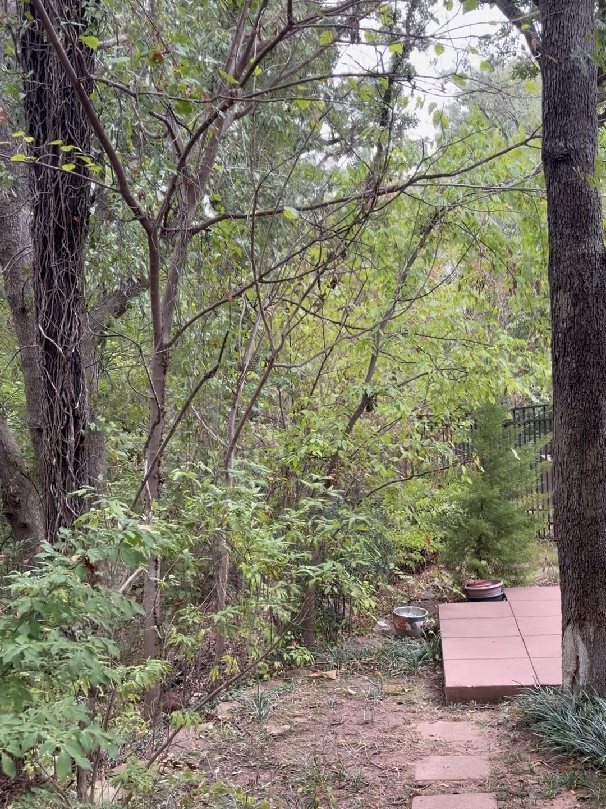
Figure 10A · Encroaching volunteer saplings.
Proposed HOA price
10. Boundary management — selective sapling clearing — $330. Small-scale removal/management of encroaching volunteer saplings, preserving desirable vegetation; assumes a single crew visit and modest accessible area.